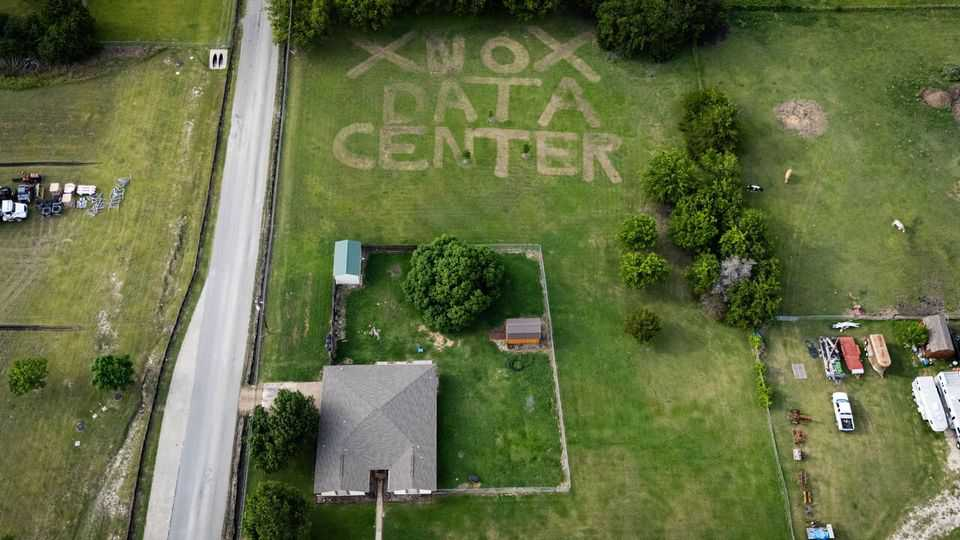

How data centres became one of America’s hottest political issues
Growing hatred of the facilities is reshaping the midterm elections

Sep 3rd 2026
A SPECTRE IS haunting America—the spectre of data centres. The computer-filled warehouses powering America’s boom in artificial intelligence have become less popular than almost every other kind of infrastructure—even nuclear-power plants. Counties and states are rushing to wrap them in red tape or ban them altogether. In July the Ratepayer Protection Act, designed to limit their impact on electricity prices, sailed through the committee stage in the House of Representatives.
On August 31st Donald Trump weighed into the fractious debate, alarming Republicans facing tight midterm races. Local opponents of data centres would “end up being backwards and poor”, he warned, if they killed the “Golden Goose”. The backlash against data centres is scrambling traditional political alignments, reshaping the coming elections and unnerving tech firms and investors. It is less clear whether it will slow down the ai juggernaut.
For a sense of how quickly the politics of data centres has changed, consider three very different states: Illinois, Texas and Pennsylvania. In 2019 J.B. Pritzker, the governor of Illinois, signed a bipartisan law creating incentives for their construction. “In today’s world,” he declared, “data centres are as critical a part of our infrastructure as our roads, trains and schools.” In Texas, Greg Abbott boasted as recently as last year that the state was “the epicentre of AI development” while welcoming new Google data centres. Josh Shapiro, Pennsylvania’s governor, was similarly enthusiastic: “We are already all in on AI.”
In August Mr Pritzker had a rather different message. Data centres, he told reporters, risked “higher electric rates, higher water rates or…environmentally unsound practices”. In June he had unilaterally paused applications for the tax credits introduced in 2019. In Texas, Mr Abbott ordered the state’s power utilities to audit all data centres seeking to draw electricity. The facilities “could endanger the reliability and stability of the Texas electric grid”, he warned. Mr Shapiro has also tightened the rules, giving communities more power to veto projects, while tarring his opponent in the gubernatorial race as pro-data centre—increasingly, a political term of abuse.

A little over a year ago some polls showed majority support for local data-centre construction. By March that had flipped: one Gallup poll found 71% opposed. Surveys by Annenberg recorded a 19-point swing in net favourability between February and June-July. An Economist/YouGov poll from the end of August put opposition at 63%. Data centres were viewed as bad for the country across every group of voters (see chart 1).
Chicago illustrates the shift. Long before the AI boom, the city and its suburbs hosted scores of data centres, thanks to their position at the heart of America’s internet infrastructure and relatively cheap electricity. Until recently, few people cared. Now they are packing public meetings in an effort to stop development across the state. In August hundreds turned out to oppose plans for a project on Chicago’s South Side that, according to its developers, is not even a data centre.

In the first eight months of this year, American counties considered 409 moratoriums or similar measures, nearly seven times last year’s total. In more than half a dozen states—including virtually every midterm battleground—more than a fifth of counties have passed at least one moratorium (see chart 2). “This is one of the toughest development issues I’ve encountered in my career from a land-use attorney’s perspective,” says Tommy Mann of Winstead, a Dallas law firm. “The level of emotion associated with these projects is one that I have not experienced.”
Some proponents of data centres have blamed foreign powers for the backlash. “China could not be happier,” observed Mr Trump. In June OpenAI, a model-maker, said that a Chinese firm had produced images designed to undermine support for data centres in America. On August 27th X, the social-media platform, said it had identified a 200,000-strong Chinese bot farm circulating the material. Yet the evidence suggests these efforts have had little effect. OpenAI concluded that they generated “little or no observable engagement” among Americans.
The real cause of the outrage is simpler. Americans are sceptical of AI, distrust the firms that build it and fear it will lead to job losses. But poll after poll suggests that what worries them most about data centres is their local impact—or, at least, what they imagine that impact to be. A recent Fox News poll found that 75% of respondents cited concerns such as energy use, water bills and traffic, as the main reason they opposed a data centre in their area. Just 11% pointed to AI itself.
Many of these concerns are overblown. Google, a hyperscaler, says that in 2025 its data centres and offices consumed around 10.9bn gallons (41bn litres) of water—roughly equivalent, it noted, to the annual irrigation of 73 golf courses in the south-west. Amazon, another hyperscaler, says its global fleet of data centres used 2.5bn gallons last year, down by 2% from 2024 despite adding more facilities. In 2023 crop irrigation consumed 74 times more water than data centres, even after accounting for the water used to generate their power.
Electricity is a different matter. The Lawrence Berkeley National Laboratory, a federally funded research centre, estimates that data centres consumed 4.4% of America’s electricity in 2023 and could account for between 9.5% and 15.3% by 2030. Their impact on consumers is less clear. Wholesale prices are being pushed up. That could eventually impact households. But the Electric Power Research Institute, a think-tank, estimates that the growth of data centres actually reduced average electricity prices by 6% between 2019 and 2024 by spreading the grid’s fixed costs.
In recent weeks three big utilities—Georgia Power, Pacific Gas & Electric and Indiana Michigan Power—have all linked data centres to lower bills. Meanwhile, 30 states have approved or proposed “large-load” tariffs designed to ensure that big customers such as data centres pay for infrastructure upgrades.
The question is whether public opinion is still malleable. A poll this month by Echelon Insights found that opposition to data centres could be reversed if respondents were told about just one potential benefit, such as lower property taxes or more spending on schools. “Voters are open to making a deal on data centres,” argues Patrick Ruffini, a Republican pollster who runs Echelon. They also seem open to bribes. Another poll, by the University of Virginia, found that most people would accept a few thousand dollars to support a local data centre, with a median acceptable payment of $10,000. Paying every resident of a median-sized American county would cost around $240m—pocket change for the tech industry. It is already showering gifts on communities.
Still, the backlash shows few signs of abating. “We’re going to see the same thing happen in 2028,” says Darrell West of the Brookings Institution, a think-tank. Governors who escape the issue this year will face it in two years’ time, he argues, when they come up for re-election.
The politics of data centres is topsy-turvy in other ways, too. The backlash could prove especially awkward for Democrats in Illinois, where trade unions are powerful. Many unions are enthusiastic supporters of data centres. After Mr Pritzker’s decision in June, a group of union leaders issued a critical statement. The move, they said, “will send billions of dollars in investment and thousands of union jobs to Indiana, Kentucky and Ohio”. Tim Gillooley, a local union official, is even more emphatic: “These data centres are going to be built! Let’s get them built here.”
The growing opposition is sand in the wheels of the industry. Sales-tax exemptions for computer chips—the biggest cost of building a new data centre—remain in place in most states, including Texas. But they have been paused in others, including Arizona and Ohio, or made conditional, as in Pennsylvania. That, along with satisfying local demands, will inevitably increase the cost of new data centres. Even so, a handful of states still wield outsize influence. Texas alone has more data centres under construction than Georgia, Arizona and Pennsylvania combined (see chart 3).

Data-centre investment may simply flow to more permissive states. “Enough of these data centres are going to find a home in a community willing to work with them in return for the tax revenue and other benefits,” says Jack Painter, an energy analyst at Capstone, a strategy firm. As Mr Trump put it: “Let Data Reign.” ■
Stay on top of American politics with The US in brief, our daily newsletter with fast analysis of the most important political news, and Checks and Balance, a weekly note that examines the state of American democracy and the issues that matter to voters.